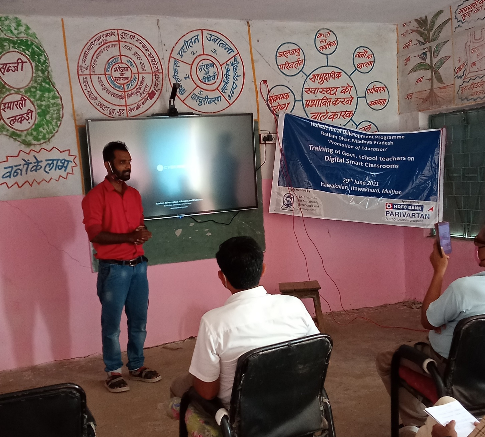
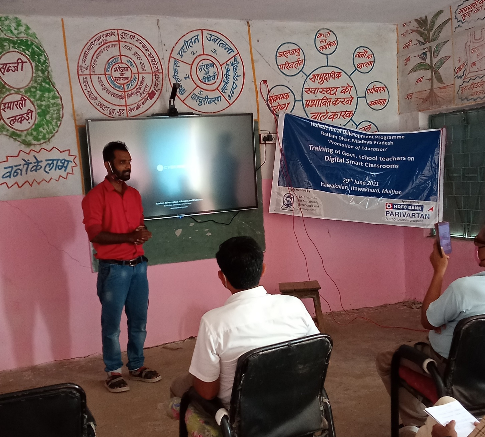

Nilesh Vadgave
Academic | Entrepreneur | Artist
About Me
Nilesh Vadgave is a PhD student, studying Technology Development and social entrepreneurship at the Indian Institute of Technology Bombay, India. He studied Mechanical Engineering for his bachelor and did Post Graduation in Technology & Development from IIT Bombay, which led him to develop a particular interest in development of intermediate technologies with social impact. He is currently working on design, optimization of modular storage technologies to mitigate value chain losses in the perishable agricultural commodities. His transdisciplinary research integrates Technology design and dissemination through participation of communities with the goal of ‘end to end innovation’. With the aim of Technology Development for social good, Nilesh has incorporated two businesses named 'O-Zone LLP' and 'CircularKheti' that works in climate change and food security. Along with this, Nilesh is active in Theatre, Poetry reading and training the future generations for sustainable and happy future!
 LinkedIn
LinkedIn
Academic
Pioneering climate-smart solutions to optimize storage technologies for perishable goods, reducing value chain losses and enhancing food security through innovative research at IIT Bombay.
Entrepreneur
Leading ventures like O-Zone LLP and Circular Kheti, driving innovation in sustainable agriculture and waste reduction to enhance farmers’ incomes and promote environmental resilience.
Development Professional
Trained Professional with experience to work in social sector pertaining to the developemnt of bottom 80% of the Indian Population living in rural and semi-rural areas.
Artist
Exploring sustainability and human values through theatre, poetry, and sketches, with performances like “Saarang Uwaach” sparking dialogue on social and environmental issues.


 
